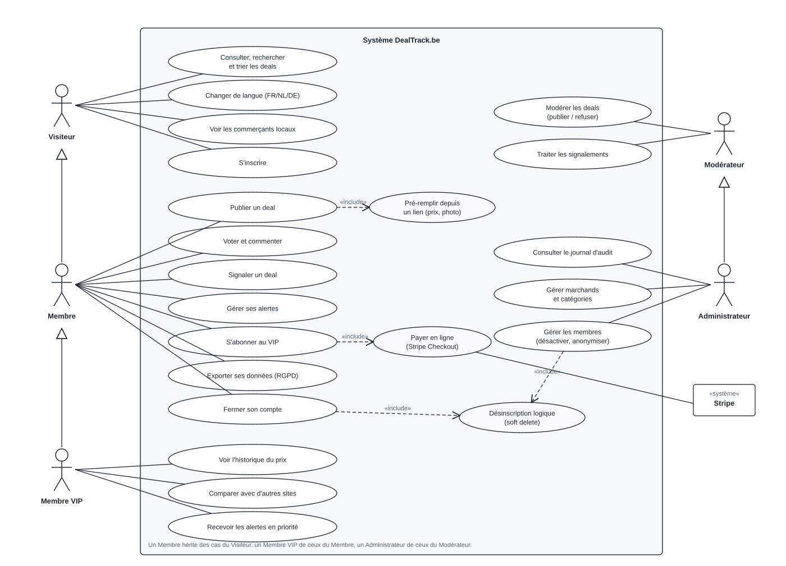
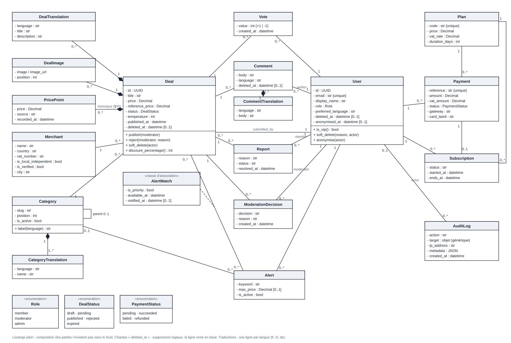
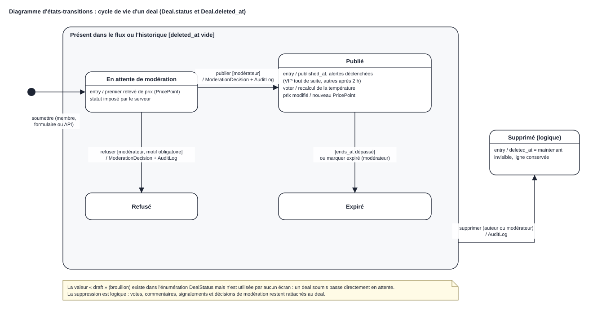
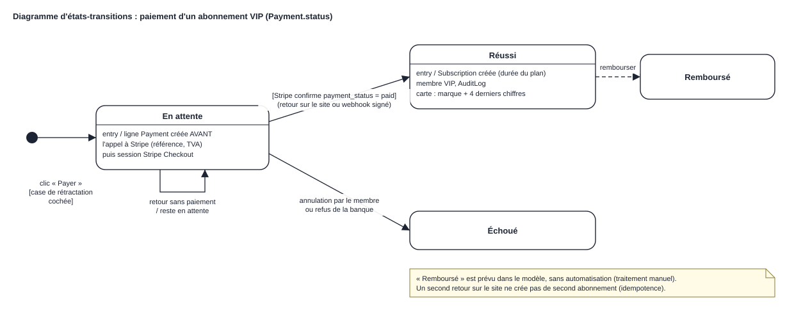
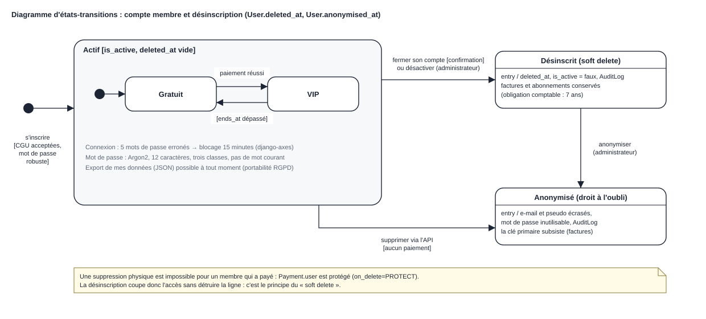

Épreuve intégrée — Institut des Carrières Commerciales, Bruxelles
Mohamed-Amine Chenani
Cinq acteurs humains, hiérarchisés par héritage (Visiteur → Membre → Membre VIP ; Modérateur → Administrateur), et un système externe, Stripe. La fonctionnalité principale est « Publier un deal », qui inclut le pré-remplissage depuis un lien, suivie de sa modération dans le back-office. « Fermer son compte » et « Gérer les membres » incluent la même désinscription logique (soft delete).

Fidèle aux modèles Django : 19 classes et 3 énumérations. Deal et User sont au centre ; les classes intermédiaires (Vote, Comment, Report, ModerationDecision) relient un membre à un deal. Les losanges pleins indiquent une composition : traductions, photos et historique des prix n'existent pas sans leur deal. AlertMatch est la classe d'association entre une alerte et un deal (priorité VIP, date de disponibilité).

Un deal soumis attend la modération, puis il est publié ou refusé ; un deal publié expire à sa date de fin ou sur décision d'un modérateur. Dans n'importe lequel de ces états, la suppression est logique : le champ deleted_at est renseigné et la ligne reste en base avec ses votes et commentaires.

La ligne Payment est créée « en attente » avant tout appel à Stripe, pour qu'aucun débit n'existe sans trace. Le passage à « Réussi » n'a lieu que si DealTrack interroge lui-même Stripe (au retour ou par webhook signé) ; il crée alors l'abonnement.

Un membre actif est gratuit ou VIP. La désinscription d'un membre qui a payé est logique : l'accès est coupé mais la ligne et ses factures restent (obligation comptable). L'anonymisation applique ensuite le droit à l'oubli en écrasant les données personnelles, sans casser le lien avec les factures.
